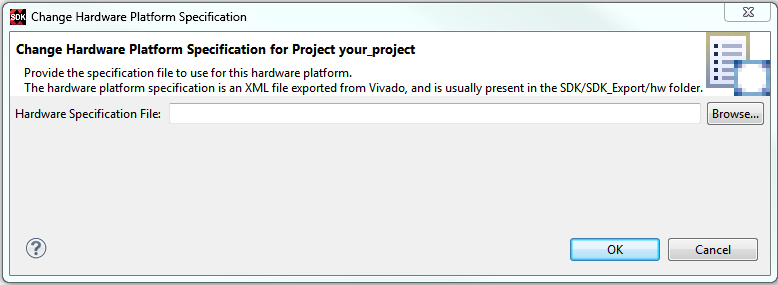

You can change the hardware specification file of the SDK hardware project
using this procedure:
Select the Hardware Project in the Project Explorer view.
Right-click on the hardware project and select Change Hardware Specification
File.
A dialog box opens to indicate the changes that will be made to the software projects
associated with this hardware platform. Click Yes to continue.
Specify the source hardware specification file.
Click OK.

SDK does the following:
Updates the hardware project with the new hardware specification file,
bitstream and BMM file.
If a processor sub-system was removed from the hardware design, SDK
closes the software projects, any board support packages based on the
previous hardware design, and any application projects, targeted to the
removed processor subsystem.
Updates the board support package project with changes in the hardware
processor sub-system. This include removal of drivers for removed
periberals and addition of default drivers for new periberals.
Re-builds all the software projects related to the hardware
project.